4ks cesnak
125 g maslo
6ks karička/črievko
pečivo
Ingrediencie (Množstvo: 4 porcie):
4ks cesnak
125 g maslo
6ks karička/črievko
pečivo
Príprava:
Očistíme cesnak
Pretlačený cesnak zmiešame s maslom a syrom
Ingrediencie (Množstvo: 4 porcie):
4ks vajíčko
125 g maslo
1 čl horčica
pečivo
Príprava:
Vajíčka uvaríme na tvrdo - 8-10 minút
Olúpané vajíčka zmiešame s maslom a horčicou, osolíme
Ingrediencie (Množstvo: 4 porcie):
100 g olivy
5ks kapari
štipka čierne korenie
štipka soľ
2PL olivový olej
1ČL štava z citrónu
štipka tymián
Príprava:
Všetko zmiešame dokopy
Pomixujeme ponorným mixérom
Ingrediencie (Množstvo: 1 plech):
250g horká čokoláda
250g maslo
85g orechy
100g mliečna čokoláda na kúsky
100g biela čokoláda
175g hladká múka
1ČL prášok do pečiva
4 vajíčka
1 vanilkový cukor
300g kryštálový cukor
Príprava:
Čokoládu a maslo rozpustíme vo vodnom kúpeli
Pridáme múku a prášok do pečiva
Pridáme cukor, vajíčka, vanilkový cukor, orechy, pokrájanú čokoládu
Pečieme 40 minút na 175°
Ingrediencie (Množstvo: 1 tortová forma (25cm)):
Cesto
15g sušienky
80g maslo
Slaný karamel
150g kryštalóvý cukor
50g maslo
100ml smotana na šľahanie
0.5ČL soľ
Príprava:
Maslové sušienky rozdrviť a primiešať maslo
Vystelieme formu na pečenie papierom a natlačíme na kraje sušienky s maslom
Dáme korpus piecť na 10-15 minút na 180° a zatiaľ zmiešame mascarpone s vajíčkami, cukrom, smotanou
Zmesou naplníme korpus a dáme piecť na 40-50 minút
Pripravíme slaný karamel:
Skaramelizujeme cukor
Pridáme maslo
Prilejeme smotanu
Prídáme 1/2 lyžičky soli
Polejeme, necháme v chladničke vychladnúť
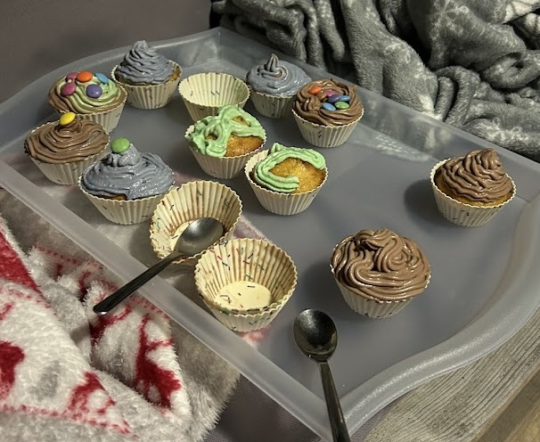
Ingrediencie (Množstvo: 15 ks):
100g kryštálový cukor
2ČL prášok do pečiva
2 vajíčka
170ml mlieko
125g maslo
220g polohrubá múka
Plnka
1 mascarpone
1 smotana na šľahanie
1 vanilkový cukor
3PL kryštálový cukor
granko
Príprava:
Cesto:
Vymiešame cukor s maslom
Pridáme vajíčka
Pridáme múku a prášok do pečiva
Rozdelíme do košíčkov
Pečieme 20-25 minút na 180°
Krém:
v miske zmiešame šľahačku a mascarpone, osladíme, pridáme granko

Ingrediencie (Množstvo: 1 tortová forma (25cm)):
Korpus
4 bielka
150g kryštálový cukor
150g mandle + 30g vlašské orechy
Plnka
1 LIDL Piknik (150g)
20g múka
1 vanilkový cukor
75g maslo
4 žĺtka
Posyp
DAIM čokoláda / krokant
125g čokoláda
50ml smotana/mlieko
Krokant
50g kryštálový cukor
20g orechy
1ČL maslo + 30ml voda
Príprava:
Pripravíme korpus:
bielka zmiešame s cukrom a vyšľaháme sneh
pridáme orechy a len rukou domiešame aby sneh nespadol
Dáme do vymúčenej formy a necháme piecť 35 minút na 175°
Popri pečení pripravíme plnku:
Žĺtka a salko miešame nad parou
Pridáme cukor a múku
Po vychladnutí primiešame maslo
Po upečení korpus rozrežeme a po vychladnutí naplníme plnkou
Na vrch dáme plnku a polejeme čokoládou zmiešanou s krokantom
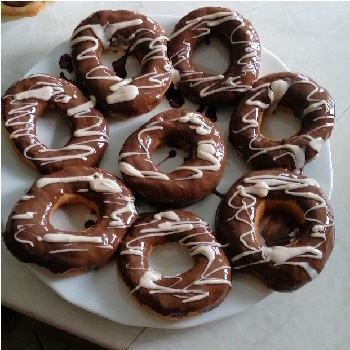
Ingrediencie (Množstvo: ???):
štvrť maslo (65g)
2 PL kryštálový cukor
vanilková aróma
1 vajce
2 hrnčeky polohrubá múka
Kvások
1 hrnček teplé mlieko
polovica droždie
trošku cukor
Príprava:
Vyrobíme kvások a necháme 30 minút kysnúť
Zmiešame zvyšné ingrediencie s kváskom
Vyvaľkáme na 1,5cm a povykrajujeme donuty
Rozohrejeme olej s ČL masla
Opražíme tak 10s z jednej a 10s z druhej strany
Podľa ľubovôle poleva z čokolády
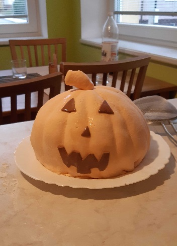
Ingrediencie (Množstvo: 1 torta (25cm)):
250g marshmallow
1 ČL maslo
2 štipky kyseliny citrónovej
200g práškový cukor
Príprava:
Marshmallow, maslo a citrodeko dáme do misky a na minútu - dve do mikrovlnky. (Každých 15s premiešať.)
Pridávame preosiaty cukor. (Kým sa dá, miešame v miske)
Vyklopíme na dosku na preosiaty cukor, vyrobíme tuhšie cesto.
Vyvaľkať a preniesť valčekom na tortu
Ingrediencie (Množstvo: ???):
125g maslo
125g cukor
2-3PL med
250g hladná múka
štipka soli
kypriaci prášok
Príprava:
Zmäknuté maslo vyšľahať s cukrom a štipkou soli
pridať múku s kypriacim práškom a med
Vyhnietiť do jemnej hmoty
Nechať aspoň hodinu odpočinúť v chladničke
Vyvaľkať a vyťapkať z neho placky
Dať piecť do rúry, 10-15 minút, 180°
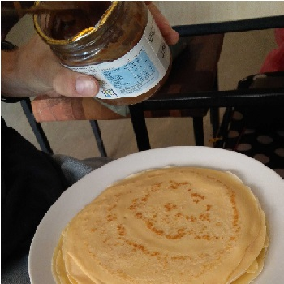
Ingrediencie (Množstvo: 1 porcia):
1 vajce
100g hladkej múky
100ml mlieko
1/4 vanilkového cukru, štipka soli
Príprava:
Všetky zmiešame dokopy
Opekáme na panvici
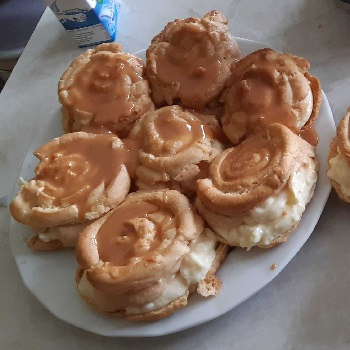
Ingrediencie (Množstvo: 15ks):
Cesto
300 ml voda
150g palmarín
150g hladká múka
4ks vajíčka
Plnka 1
1-2ks zlatý klas
750ml mlieko
1ks vanilkový cukor
3.5PL práškový cukor
125ml šľahačka
Plnka 2
10PL kryštálový cukor
500ml šľahačka
Poleva
2.5PL kryštálový cukor
25ml mlieko
125g práškový cukor
Príprava:
Vodu s palmarínom necháme zovrieť a do toho pridáme múku.
Miešame 3 minúty nech sa cesto odliepa od hrnca. Necháme vychladnúť.
Do cesta primiešame vajíčka po jednom.
Na plech vytvarujeme ozdobným vreckom.
Pečieme 10 minút na 250C a potom 20 minút na 170C.
Ešte horúce veterníky rozrežeme.
Pripravíme karamel:
Do hrnca dáme cukor aj na Plnku 2 aj na Polevu.
Časť karamelu pridáme do misky s cukrom na polevu, a zmiešame. (Ak je zmes hustá, pridáme kúsok mlieka.)
Zvyšok karamelu si odložíme a neskôr pridáme k vymiešaným šľahačkám na Plnku 2.
Urobíme puding na Plnku 1.
Pripravíme šľahačku:
Vymiešame šľahačku na Plnku 1 aj na plnku 2
Po vychladnutí časť šľahačky primiešame do pudingu.
Do zvyšku primiešame karamel.
Naplníme Plnkou 1, Plnkou 2 a polejeme Polevou
Ingrediencie (Množstvo: 3 porcie):
150ml mlieko
3 vajce
7PL olej
175g hladká múka
1,5 PL cukor
1 prášok do pečiva
Príprava:
Všetko zmiešame dokopy
Vymastíme wafľovač, robíme wafle. (Ak sa trhajú, tak vajce/viac vymastiť)
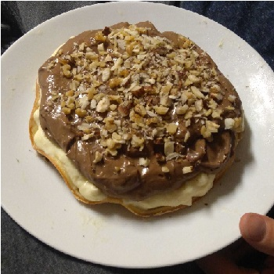
Ingrediencie (Množstvo: 1 tortová forma):
Piškótové cesto
200g kryštálový cukor
1dl voda
4ks vajce
1dl olej (???)
200g hladká múka
1ks vanilkový cukor
1ks prášok do pečiva
Pudingy
500ml mlieka
puding
2PL cukru
Príprava:
Urobíme piškótové cesto:
Žĺtka vymiešame s cukrami do peny
Pridáme olej a vodu a premiešame
Pridáme múku s práškom do pečiva
Pridáme sneh z bielok
Pečieme 20 minút na 180°C
Urobíme puding a vykydneme na piškót
Pred podávaním necháme vychladiť v chladničke
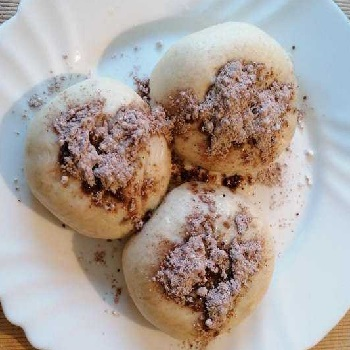
Ingrediencie (Množstvo: 20ks):
700g polohrubá múka
1ks droždie
400ml mlieko
30g kryštálový cukor
štipka soľ
plnka (nutela, džem)
Príprava:
Z teplého mlieka, droždia, cukru, kúsku múky a štipky soli urobíme kvások
Vypracujeme hladké cesto, necháme 45 minút vykysnúť
Vyvaľkáme na 1cm a urobíme buchty
Paríme asi 10 minút
Ingrediencie (Množstvo: 8 porcií):
6 vajíčko
6 lyžíc polohrubá múka
6 lyžíc cukor
Príprava:
Vajíčka vyšľaháme do peny
Po lyžiciach pridávame cukor a potom múku
Pečieme 20-25 minút na 180°
Ingrediencie (Množstvo: 1 torta (25cm)):
250g maslo
1 konzerva uvareného salka
Príprava:
Maslo vyložíme z chladničky a necháme zmäknúť.
Maslo mixujeme a popri tom po lyžiciach pridávame salko

Ingrediencie (Množstvo: 4 porcie):
chladené lístkové cesto
Inšpirácia na plnku
nuttela
paradajkový pretlak, šunka, syr, pizza korenie
puding
jablko
mak
tvaroh
Príprava:
Cesto necháme chvíľočku ohriať
Robíme croisanty, pizzové rolky, pudingové taštičky, jablkové taštičky, mak, jablko, tvaroh, hocičo
Pečieme zhruba 15 minút na 200
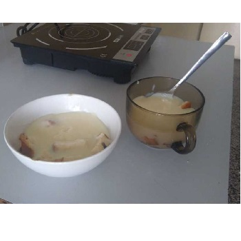
Ingrediencie (Množstvo: 2 porcie):
1 vianočka
1 vanilkový puding / zlatý klas
0.5 litra mlieko
2 PL cukru
Príprava:
Vianočku pokrájame na kúsky.
Uvaríme vanilkový puding a zalejeme ním vianočku.
Ingrediencie (Množstvo: 1 tortová forma (25cm)):
330ml smotana na šľahanie
250g mascarpone
500g salko
Príprava:
Upečieme korpus, asi klasický piškót, teda 20-25 minút, 180°
Vyšľaháme šľahačku a primiešame salko a mascarpone
Nadžabáme na korpus
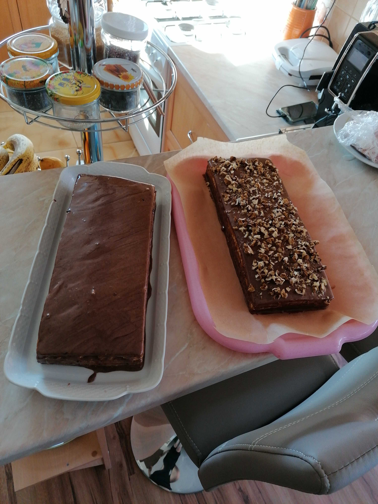
Ingrediencie (Množstvo: 20ks):
Pláty
2 balenia hotových plátov, alebo
250g hladká múka
250g polohrubá múka
150g cukor
80g maslo
3ks vajíčko
1 štipka sódy bikarbóny
Poleva
100g práškový cukor
100g maslo
2ks vajíčko
1PL kakao
Príprava:
Pripravíme pláty
Pláty:
Nad parou zmiešame cukor, maslo, vajíčka, med, škoricu a sódu bikarbónu.
Za stáleho miešania chvíľu varíme. Odstavíme a primiešame hladkú aj polohrubú múku.
Z hmoty vypracujeme cesto, ktoré si rozdelíme na 4 rovnaké časti.
Rozvaľkáme a po jednom pečieme každý plát približne 6 minút pri 180 stupňoch.
Popri pečení pripravíme plnku:
Uvaríme Zlatý klas a necháme h vychladnúť.
Po vychladnutí primiešame maslo a cukor.
Na prvé dva pláty natrieme 2/3 plnky.
Tretí potrieme džemom a na džem natrieme zvyšok plnky.
Posledný plát položíme na tretí.
Pripravíme polevu:
Nad parou rozšľaháme vajíčka,cukor a kakao.
Do uvarenej horúcej zmesi vmiešame maslo.
Naplnené pláty polejeme polevou a posypeme nasekanými orieškami.

Ingrediencie (Množstvo: 3 porcie):
300g jablka
1 vajce
300g hladká múka
300ml mlieko
1 vanilkový cukor
1 prášok do pečiva
Príprava:
Všetko zmiešame dokopy
Robíme lievance na panvici.
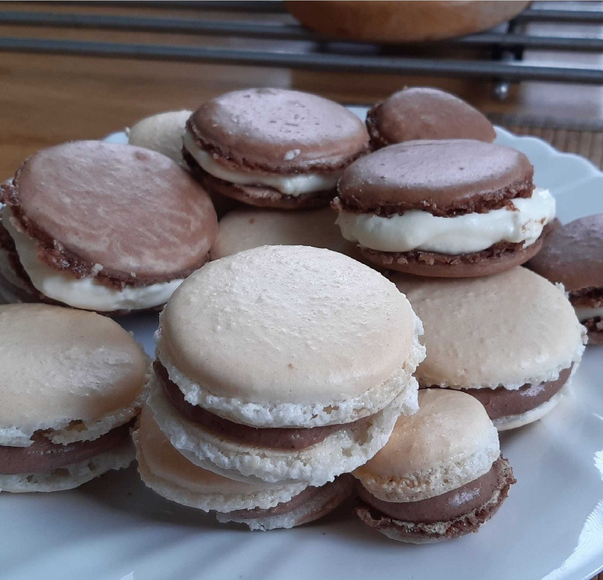
Ingrediencie (Množstvo: 15 ks):
Cesto
1 hrnček madľové plátky
1 hrnček práškový cukor
2 bielka
1/4 hrnčeka kryštálový cukor (treba zistiť, či naozaj treba)
2 lyžičky kakao
Krém
125ml smotana na šľahanie
200g smotanový termizovaný syr
3 lyžice práškového cukru
1 lyžica kakaa
Príprava:
Pripravíme krém:
Zmiešame všetko dokopy a miešame až kým to nie je tuhé
Do polovice primiešame kakao
Pripravíme cesto:
Bielka vymiešame do tuhého snehu
Posekáme mandľové plátky na múku
Preosejeme cez sitko do snehu
Primiešame kryštálový aj práškový cukor
Do polovice primiešame kakao
Cesto cukrárskym vreckom nanesieme na papier na pečenie, a počkáme 20-30 minút, kým makrónky zaschnú
Pečieme 10-15 minút pri 150°C
Kakaová polovica cesta sa nejako v rúre roztiekla, neviem prečo. Celé je to fakt slané, asi by bolo zmenšiť množstvá cukru.
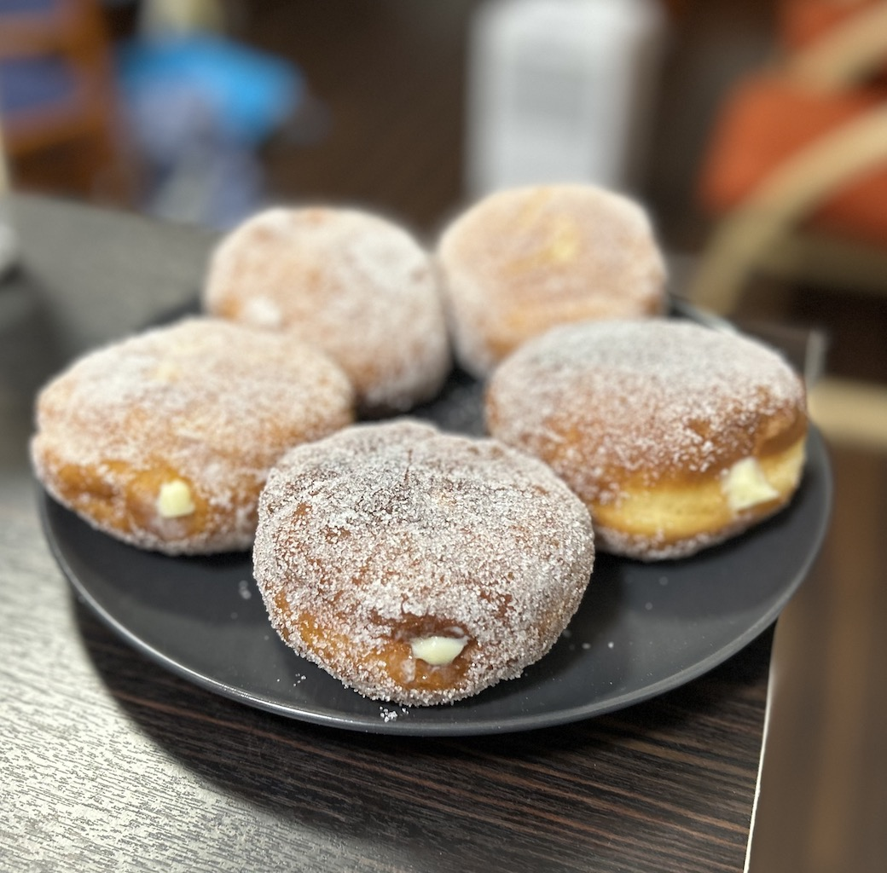
Ingrediencie (Množstvo: 15ks):
Šišky
300ml teplé mlieko
1ks droždie
40g kryštálový cukor
480g hladká múka
štipka soli
4ks žĺtok
30g maslo
30g bravčová masť
Karamelový puding
130g kryštálový cukor
40ml voda
3ks žĺtok
30g hladká múka
20g Zlatý klas
480ml mlieko
1čl soľ
80g maslo
Obaľovanie
150g kryštálový cukor
2ks vanilkový cukor
Príprava:
Z teplého mlieka, droždia, cukru a 40g múky vyrobíme kvások a necháme ho kysnúť 10 minút.
Kvások zmiešame so zvyšnými ingredienciami a miesime kým sa neodliepa od stien misky.
Pomúčené cesto prikryté necháme kysnúť 45 minút.
Zatiaľ pripravíme karamelový puding:
Cukor s vodou necháme v hrnci karamelizovať.
Medzitým rozmiešame žĺtky a Zlatý klas v 80ml mlieka.
Do hotového karamelu za stáleho miešania pridáme mlieko, soľ a vyrobenú zmes.
Miešame do zhustnutia.
Puding stiahneme z ohňa a vmiešame maslo.
Vykysnuté cesto rozvaľkáme na pomúčenej doske na hrúbku 1,5cm.
Z cesta vykrojíme kolieska, ktoré necháme ešte chvíľu kysnúť.
Šišky pomaly vyprážame dozlatista.
Vypražené šišky obalíme v zmesi kryštálového a vanilkového cukru.
Šišky naplníme pudingom pomocou cukrárskeho vrecka.
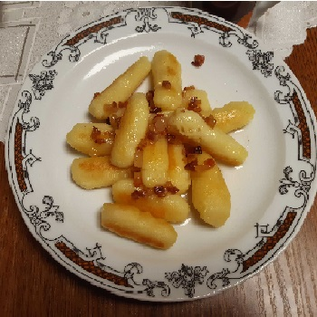
Ingrediencie (Množstvo: 6 porcií):
1kg zemiaky
350g hrubá múka
2KL soľ
slanina
Príprava:
Očistiť zemiaky, dať variť aby boli tesne zakryté vodou
Zamiaky popučiť vo vode
Pridať múku
Nechať postáť, aby múka v horúcich zemiakoch napučala
Vyvaľkať džadky
Popražiť na panvici
Posypať opraženou slaninkou
Ingrediencie (Množstvo: 1ks):
Zemiaky čo zostali z obeda
Trocha múky
olivový olej
cesnak
Príprava:
Zmiešame zemiaky čo zostali z obeda s trochou múky
Rozvaľkáme/v rukách roztlačíme
Pomúčené opekáme, aby sa nepripaľovalo
Zmiešať pretlačený cesnak s olivovým olejom
Ingrediencie (Množstvo: 4 porcie):
bravčové mäso
olej
soľ
čierne korenie
strúhanka
vajcia
cibuľa
Nálev
maslo
olej
soľ
vegeta
kečup
horčica
čierne korenie
Príprava:
Mäso naklepeme a nakoreníme
Do mäsa vkepeme strúhanku
Namočíme vo vajíčku a sprudka opražíme
Vymastiť plech
Pokrájať cibuľu na kolieska a poukladať na rezne na plech
Pripravíme nálev:
Rozpustiť maslo s olejom
Pridať soľ, vegetu, kečup, horčicu, korenie
Prevariť na sporáku
Vyliať na rezne
Zakryť alobalom a dať piecť
5 minút na najsilnejšom
20-30 minút na 180°C
5 minút bez alobalu
Ingrediencie (Množstvo: 6 porcií):
500g zemiaky
500g múka hladká/polohrubá
1 vajce
1 ČL soľ
125g bryndza
70g maslo
200ml voda
pažítka
Príprava:
Uvaríme a pretlačíme zemiaky
Z múky, lyžice zemiakov, vajec vymiešame cesto
Zemiaky zmiešame s bryndzou, pažítkou, maslom, soľou
Naplníme, varíme kým nevyplávajú
Ingrediencie (Množstvo: 2 porcie):
šunka
syr
paradajkový pretlak
pizza korenie, oregáno
cibuľa
vajíčko (potom ale pečieme pomalšie)
Cesto
1 cà.c de test1
1 à 2 cà.S de test2
3 gouttes de test3
8 morceaux de test4.
Syrová omáčka
niva/rival
syr v črievku
smotana na varenie/na šľahanie
nastrúhaný syr
Príprava:
Urobíme cesto:
Blabla
Blabla
Blabla
Na cesto dáme veci, podľa chuti
Syrová pizza:
Postrúhame tvrdý syr
zmiešame so smotanou, plesnivým syrom, syrom v črievku
Natrieme na pizzu
Ingrediencie (Množstvo: 3):
lasagnové pláty
brokolica
tvrdý syr
Bešamel
50g maslo
štipka soli
100g hladkej múky
500ml mlieka
nejaké korenie
Príprava:
Uvaríme brokolicu
Pripravíme si bešamel:
Roztopiť maslo, pridať múku
Pridávať mlieko
Osoliť, okoreniť
Dáme do taniera vriacu vodu, postupne do nej namáčame pláty a ukladáme do zapekacej misy
Na vrstvu plátov dáme vrstvu bešamelu a brokolice (poprípade šunky)
Na poslednú vrstvu nedávame brokolicu, ale poukladáme/postrúhame tvrdý syr
Pečieme 30 minút na 180°
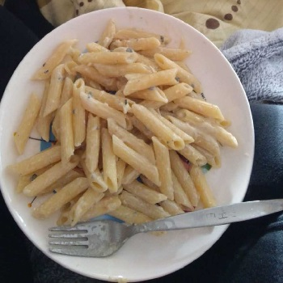
Ingrediencie (Množstvo: 1 porcia):
cestoviny, 100g na človeka
Omáčka
rival/niva
karička/bambino
smotana
olivy
sušené paradajky
špenát
kuracie mäso
cibuľka
cesnak
Príprava:
Uvaríme cestoviny
Na cibuľke popražíme paradajky a mäso
Zalejeme smotanou, pridáme syry, špenát, olivy
Ingrediencie (Množstvo: 1ks):
kuracie mäso
PL maslo
šunka
cesnak
pažitka
trojobal
Príprava:
Maslo zmiešať s cesnakom a bylinkami urobiť guľku, a dať do mrazničky
Spraviť otvor do mäsa, kde vložíme v šunke zabalené maslo
Obaliť v trojobale
Vypražiť
Ingrediencie (Množstvo: 1ks):
rival/niva
karička/bambino
smotana
vegeta
cibuľa
Príprava:
Rovnako ako omáčka na cestoviny popražiť cibuľku
Pridať smotanu, syry, soľ, vegetu
Ingrediencie (Množstvo: 1ks):
kukurica
soľ
maslo
Príprava:
Dáme variť vodu s kukuricou, môžeme do vody pridať zopár šupiek z kukurice
Varíme 5 minút
Ingrediencie (Množstvo: 2 porcie):
260g hladká múka
2 KL kypriaci prášok
1/2 KL soľ
1 KL kryštálový cukor
150g biely jogurt
1 PL olivový olej
1-3 PL mlieko
2 strúčiky cesnak
1/2 hrste koriander
1 KL maslo
Príprava:
Zmiešame múku s práškom do pečiva, soľou a cukrom. Všetko dobre premiešame.
Pridáme jogurt, olej, a lyžicu mlieka.
Všetko spracujeme do celistvého cesta, ak treba, pridáme ešte trochu mlieka.
Cesto premiestnime na pomúčenú pracovnú dosku, dobre ho prehnietime a rozdelíme na 2 až 4 časti.
Cesnak nakrájame na tenké plátky a koriander nasekáme na drobno.
Z každej časti cesta vyvaľkáme tenkú placku.
Na dosku položíme plátky cesnaku, nasekaný koriander a preložíme ich plackou, zvlaľkáme dokopy.
Pečieme na suchej, rozpálenej panvici asi 3 minúty z každej strany.
Pomastíme maslom.
Ingrediencie (Množstvo: ???):
1ks cibuľa
2 strúčiky cesnak
10g čerstvý zázvor
3ks nakrájané paradajky
300-400ml kokosové mlieko
200g červená šošovica
korenie
1 PL kari
1 PL mletá rasca
bobkový list
chilli paprička
1/2 KL mletý koriander
Príprava:
Na oleji do sklovita posmažíme nakrájanú cibuľku
Pridám nadrobno nakrájaný zázvor, pretlačený cesnak, korenie. Smažíme 1-2 minúty.
Pridáme nakrájané paradajky, kokosové mlieko, vodu, červenú šošovicu.
Varíme kým šošovica nezmäkne. Ak je to príliš husté, pridáme vodu.
Pridáme soľ podľa chuti
Ingrediencie (Množstvo: 1):
hokkaido, 150g na človeka
ryža (Carnaroli, Arborigio ak nie je iná gulatozrnná sa tiež prežije), 75g na človeka
msalo, 20g
parmezán, 25g
voda, 200ml
Príprava:
Nakrájame tekvicu (150g/človeka) na 2 cm kocky.
Tekvicu dáme variť do osolenej vody na 5 minút (čas meriame od kedy voda začne vrieť).
Pridáme ryžu, občas premiešame a varíme cca 15 minút alebo až kým nebude ryža mäkká
pri najhoršom dolejeme trochu vody aby nám to nezhorelo.
V tomto štádiu by mala byť v hrnci kašovitá ale relatívne riedka
hmota (proste tak aby sa mam to nepripalilo).
Vypneme sporák, pridáme maslo a nastrúhaný parmezán.
Rozmiešame a môžme podávať.
Môžme dochutiť soľou, provensálskymi bylinkami, čiernym korením alebo osmaženými šalviovými lístkami.
Ingrediencie (Množstvo: 2 porcie):
PL múka
2PL múka
cibuľa/párky/zemiaky/cesnak
vegeta
soľ
voda
Príprava:
Urobíme zápraž/šku:
Zohriať olej
Popražiť cibuľa/párky/cesnak
Pridať múku
Pridať vodu, soľ, vegetu, zemiaky/(paradajkový pretlak, cibuľu, bobkový list, cukor)
Pridať oregáno/majoránku/cesnak
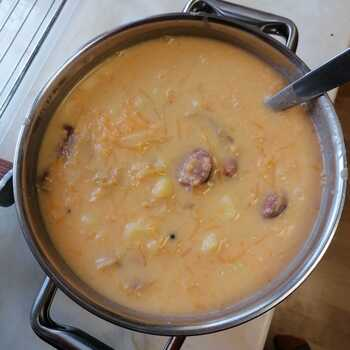
Ingrediencie (Množstvo: 4 porcie):
zemiaky
klobása
kyslá kapusta
sušené hríby
červená paprika
zápraš/žka
Príprava:
Pokrajáné zemiaky variť s polovicou klobás, hubami a okoreniť, osoliť
Po uvarení zemiakov pridať kapustu
Urobíme zápraš/žku s klobásou a paprikou
Zmiešame dokopy, a prevrieme
Ingrediencie (Množstvo: 6 porcií):
konzerva hrášku
smotana
zemiak
soľ, vegeta
Príprava:
ošúpať zemiak, osoliť, ovegetiť, dať variť
konzervu zliať z trochu vody naliať do hrnca, nechať prevrieť
pridať smotanu a rozmixovať
nechať prevrieť
Ingrediencie (Množstvo: 4 porcie):
150g fazuľa
cibuľa
bobkový list
zemiaky
smotana
klobása
červená paprika
hladká múka
Príprava:
Deň vopred si fazuľu namočíme do vody (koľko vypije, toľko)
Uvaríme fazuľu s klobásou, bobkovým listom a cibuľou, osolíme
Keď je fazuľa skoro mäkká pridáme zemiaky
V smotane rozmiešame hladkú múku a červenú papriku
Zmiešame a necháme prevrieť
Ingrediencie (Množstvo: 6 porcií):
Brokolica
1 smotana na šľahanie
soľ
vegeta
zemiaky
Príprava:
Brokolicu so zemiakmi posolíme a dáme variť
Po zmäknutí zalejeme smotanou na šľahanie a pomixujeme
Ovegetíme, necháme prevrieť
Ingrediencie (Množstvo: 4 porcie):
rozumne huby
250ml smotana na varenie
soľ, vegeta
zemiaky
cibuľa
Príprava:
Popražíme cibuľu a pridáme huby
Zalejeme vodou, pridáme zemiaky, dochutíme, necháme prevrieť
Pridáme smotanu, pomixujeme
Necháme prevrieť
Ingrediencie (Množstvo: 6 porcie):
1 tekvica hokaido
250ml smotana na varenie
soľ, vegeta
cibuľa
Príprava:
Popražíme cibuľu a pridáme umytú nakrájanú tekvicu (aj so šupkou)
Zalejeme vodou, dochutíme, necháme prevrieť
Pridáme smotanu, pomixujeme
Necháme prevrieť
Ingrediencie (Množstvo: 4 porcie):
múka
olej
syr v črievku
pažitka
zemiaky
Príprava:
Zápražka
Zalejeme vodou, pridáme syr, zemiaky
Uvaríme zemiaky, pridáme pažitku
Ingrediencie (Množstvo: 6 porcií):
500ml pasírované paradajky / 250g pretlak
1 bobkový list
2PL cukor
1ČL soľ
strúhaný tvrdý syr
olej, hladká múka
vegeta
cibuľa
Príprava:
Urobíme zápraš/žku
Zalejeme vodou, pridáme paradajky, osolíme, ovegetíme, pridáme bobkový list
Necháme prevrieť
Ingrediencie (Množstvo: 4ks):
4 ca.S de sucre en poudre
1 ca.S de creme liquide
1 ca.S de miel
1 grosse noix de beurre
35 gr d’amandes effilées
50 gr de chocolat au lait ou chocolat blanc
Test subingredient
1 ca.c de test1
1 a 2 ca.S de test2
3 gouttes de test3
8 morceaux de test4.
Príprava:
Préchauffez votre four a 180°C (th.6).
Dans une casserole, faites bouillir le sucre en poudre avec la creme liquide, le beurre et le miel.
Une fois que le sucre prend une jolie coloration brune, versez les amandes effilées dans la casserole, et remuez bien pour napper l’intégralité des amandes.
Pour la cuisson au four vous avez 2 possibilités : Soit vous versez la « pâte » dans le fond de moules en silicone, type moules a muffins ou moules a tartelettes, soit vous étalez bien la « pâte », et rapidement car le caramel durcit vite, sur la plaque de votre four recouverte d’une feuille de papier sulfurisé, et apres la cuisson vous découperez des cercles a l’aide d’un emporte-pieces rond.
Dans tous les cas, mettez la « pâte » au four pendant 3 a 5 minutes. A la sortie du four, soit vous découpez tout de suite des ronds a l’aide de l’emporte-pieces, soit vous laissez refroidir les florentins avant de les démouler de vos moules a muffins.
Pendant que les florentins refroidissent, faites fondre le chocolat au lait ou blanc soit au bain-marie, soit au micro-ondes a faible puissance, soit dans une petite casserole a feu doux.
Trempez ensuite la moitié des florentins dans le chocolat fondu et mettez-les au réfrigérateur pendant une bonne vingtaine de minutes pour que le chocolat prenne bien.
Test substep:
Blabla
Blabla